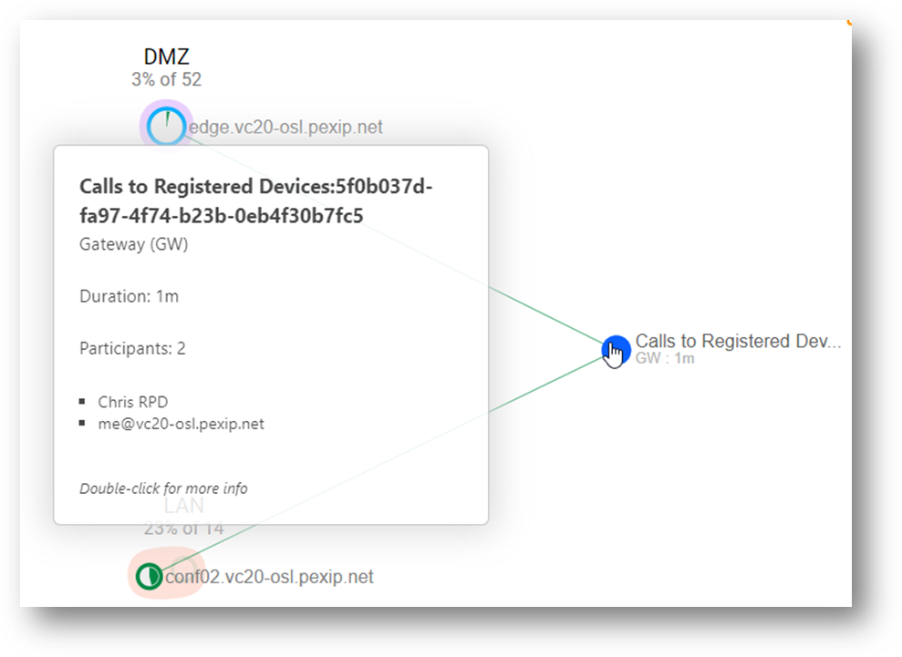
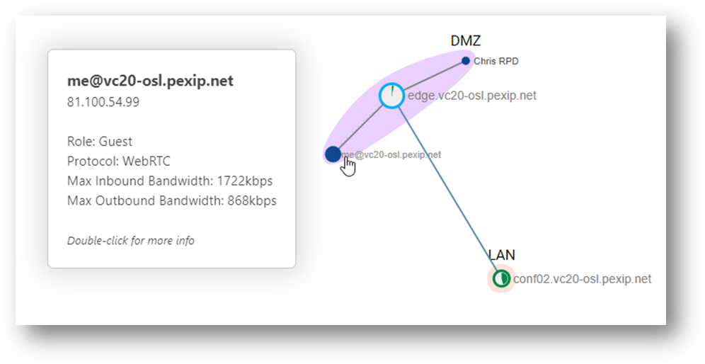
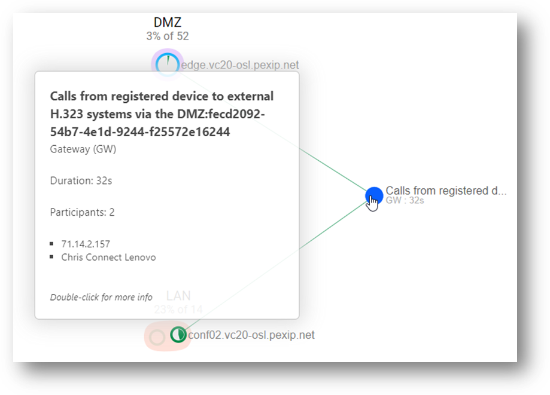
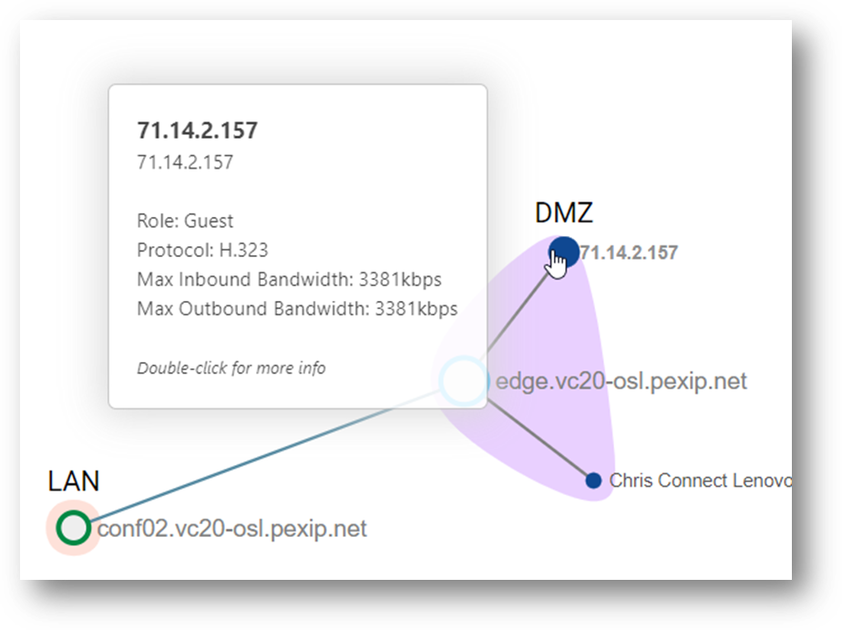
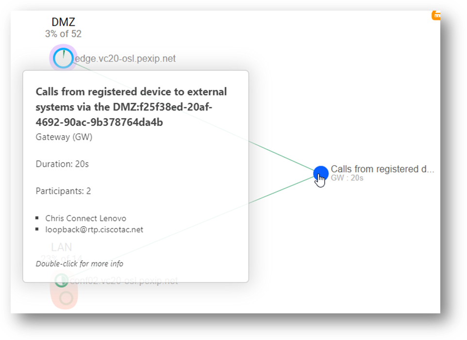
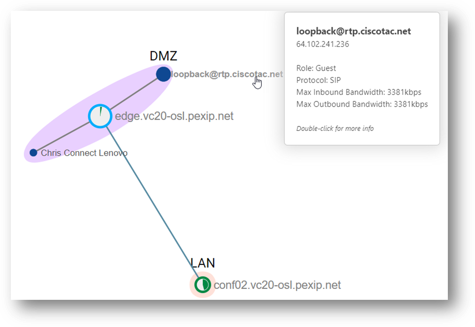

Suggested completion time: 40 minutes
Use section #4.2 of the lab sheet.
To allow calls to registered devices (where options are not listed below, defaults given in the rule should be used):
To dial from registered devices and VMRs to any external H.323 devices (where options are not listed below, defaults given in the rule should be used):
To dial from registered devices and VMRs, to any external SIP devices (where options are not listed below, defaults given in the rule should be used):
Before you test, ensure you have waited 1 minute for the configuration changes to synchronise across all the nodes. Then, to test, create call flows that match each of the Routing Rules you have configured. HINT, when a Routing Rule is matched, a Gateway service instance is made, and the name of the service will take on the name of the Routing Rule plus an appended Globally Unique Identifier (GUID). Adding a GUID to the Routing Rule name ensures that you can identify each gateway instance from the others. You can see this in the screenshots below.
For outbound SIP and H.323 test sites, try these publicly accessible endpoints. However, beware that Pexip does not own or maintain these endpoints, which may not always work. Nevertheless, if you can test your equipment, this will provide you with better troubleshooting should things not work as expected.
Also, check out https://community.cisco.com/t5/collaboration-voice-and-video/loopback-testing-for-telepresence/ta-p/3156607 (beware, some addresses may no longer work, although during the previous testing, sip:loopback@ciscotac.net, 64.102.241.236, and 71.14.2.157 did work).
The screenshots below show the call flows that match the three routing rules you have configured. When a routing rule is matched, a gateway service instance is created that will inherit the name of the routing rule and append a GUID. So check your deployment and its Live View to compare against our screenshots. Don’t forget to drill down into the gateway service instance to analyse the participants and the conference graph.
A screenshot of the main Live View for an inbound call to a Registered Device:

A screenshot of the conference graph for an inbound call to a Registered Device:

A screenshot of the main Live View for a call from a registered device to an external H.323 system:

A screenshot of the conference graph for a call from a registered device to an external H.323 system:

A screenshot of the main Live View for a call from a registered device to an external SIP system:

A screenshot of the conference graph for a call from a registered device to an external SIP system:
